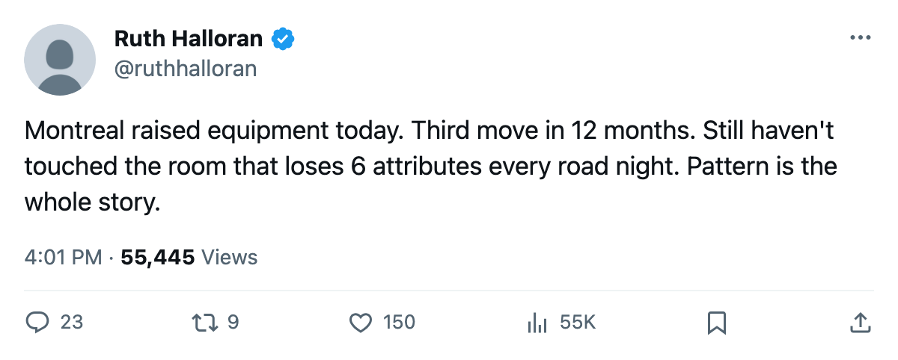
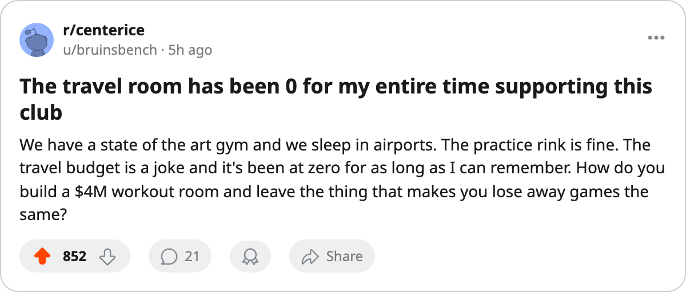

The Upgrade Report: Montreal raised its equipment room, and travel still costs 6 attributes a night
Third facility move in 12 months, and the two tracks at the league floor remain the same two
 Ruth HalloranBusiness of hockey · The Building
Ruth HalloranBusiness of hockey · The Building
 Montreal Canadiens moved its equipment room from level 1 to level 2 between the 2005-11-30 and 2005-12-01 saves. The modifier on that track goes from minus-4 to minus-3. The club's live sum across the four tracks that move a player's rating sits at minus-13, down one from where it stood before the upgrade.
Montreal Canadiens moved its equipment room from level 1 to level 2 between the 2005-11-30 and 2005-12-01 saves. The modifier on that track goes from minus-4 to minus-3. The club's live sum across the four tracks that move a player's rating sits at minus-13, down one from where it stood before the upgrade.
It is Montreal's third move on a rating-moving track since the league opened its upgrade record in December 2004. The first two were workout. The room now sits at level 4, modifier plus-0, tied with  Dallas Stars for the highest in the league. Travel sits at level 0, modifier minus-6, tied with
Dallas Stars for the highest in the league. Travel sits at level 0, modifier minus-6, tied with  Detroit Red Wings for the lowest.
Detroit Red Wings for the lowest.
Three moves, none on the rooms that need it
| track | level | modifier |
|---|---|---|
| Equipment | 2 | -3 |
| Workout | 4 | +0 |
| Practice | 1 | -4 |
| Travel | 0 | -6 |
The record holds every upgrade filed since December 2004. For Montreal:
| what changed | between | and |
|---|---|---|
| workout +1 | 2004-12-07 | 2004-12-08 |
| workout +1 | 2005-05-29 | 2005-05-31 |
| equipment +1 | 2005-11-30 | 2005-12-01 |
Three moves on tracks that change a rating. None on travel. None on practice. The spread between Montreal's best track and its worst is 6 points. Only  San Jose Sharks, Detroit Red Wings,
San Jose Sharks, Detroit Red Wings,  Washington Capitals and
Washington Capitals and  Boston Bruins carry a wider gap across the same four tracks.
Boston Bruins carry a wider gap across the same four tracks.
A step from level 0 to level 1 on travel is worth 2 points on the live sum, because the tuning table jumps from minus-6 to minus-4. A step from level 1 to level 2 on practice is worth the same. The step Montreal just took, equipment from 1 to 2, moved from minus-4 to minus-3, which is 1.
The division context
 Toronto Maple Leafs runs a live sum of minus-1 and leads the Northeast at 36 points. Boston Bruins sits at minus-14 and 29 points. Montreal's minus-13 and
Toronto Maple Leafs runs a live sum of minus-1 and leads the Northeast at 36 points. Boston Bruins sits at minus-14 and 29 points. Montreal's minus-13 and  Ottawa Senators's minus-13 are the two closest club sums to each other in the division.
Ottawa Senators's minus-13 are the two closest club sums to each other in the division.  Buffalo Sabres matches Boston Bruins at minus-14 on 22 points.
Buffalo Sabres matches Boston Bruins at minus-14 on 22 points.
Montreal is 8-9-3 through 23 games, 25 points, 3 ahead of Buffalo and 4 behind Boston. Home record 7-7, away 4-5. The club morale average is 94.0, tied for 19th with two other clubs.
What the books carry
Payroll is $54.89M. The per-point figure is $2.20M on 25 points, third in the Northeast behind Boston Bruins at $2.08M and ahead of Toronto Maple Leafs at $2.50M. Season revenue is $46.16M against $23.17M profit. Attendance 16,178 at $79 a seat.
The money is there. Stewards of  Columbus Blue Jackets know what that sentence looks like from the other side. Brent O'Connor told The Tunnel's Marcus Bell this week that Columbus's equipment room has been zero since he arrived and that he has not moved on it. "The money is there. That's the honest answer and it's not one I like giving because it makes me look slow." Montreal has the same money and a travel room at zero, and has made three upgrades without touching it.
Columbus Blue Jackets know what that sentence looks like from the other side. Brent O'Connor told The Tunnel's Marcus Bell this week that Columbus's equipment room has been zero since he arrived and that he has not moved on it. "The money is there. That's the honest answer and it's not one I like giving because it makes me look slow." Montreal has the same money and a travel room at zero, and has made three upgrades without touching it.
The pattern holds
Montreal's three moves put them in a small group. Toronto Maple Leafs leads the league with 6 upgrades on live tracks. Montreal Canadiens,  Tampa Bay Lightning and Washington Capitals have made 3 each. Twenty-six clubs have managed 2 or fewer. The league's own upgrade record is barely 13 months old, so the sample is thin, but the pattern at Montreal is consistent: raise the room that is already above the floor, leave the ones that are at it.
Tampa Bay Lightning and Washington Capitals have made 3 each. Twenty-six clubs have managed 2 or fewer. The league's own upgrade record is barely 13 months old, so the sample is thin, but the pattern at Montreal is consistent: raise the room that is already above the floor, leave the ones that are at it.
Travel at 0 means every Montreal player on the road carries a minus-6 across all attributes for the duration of the game. Practice at 1 means every Montreal player at home carries a minus-4. The workout room at 4 buys back some of that at home; strength and checking and endurance get a plus-0 where the other three tracks take points away. The equipment upgrade today was the cheapest available improvement. The two worth the most on the live sum, travel and practice, are the two that have never been touched.

